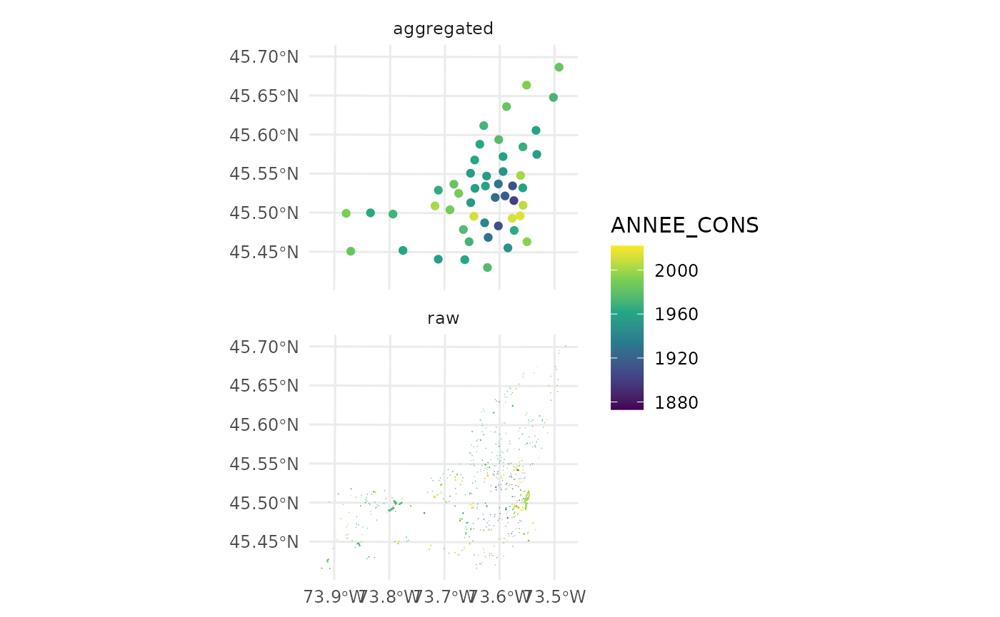
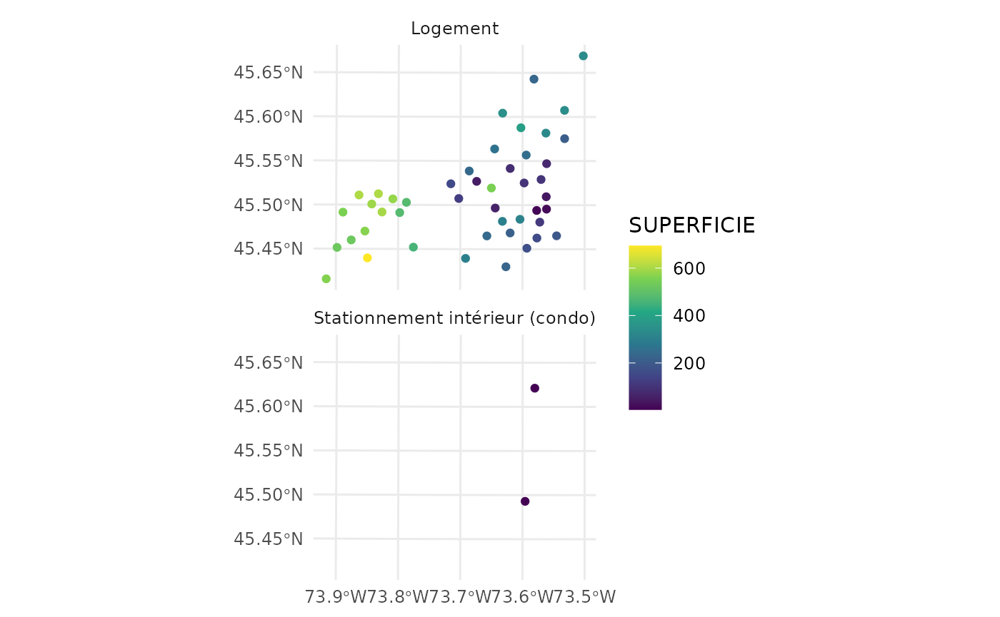

spatialKMeans.Rmd
suppressWarnings(library(SfSpHelpers))
suppressWarnings(library(ggplot2))
suppressWarnings(library(dplyr))
#>
#> Attaching package: 'dplyr'
#> The following objects are masked from 'package:stats':
#>
#> filter, lag
#> The following objects are masked from 'package:base':
#>
#> intersect, setdiff, setequal, union
suppressWarnings(library(magrittr))
shpBuildings <- cache_csv_sf_wrapper('eval_fonciere_mtl',
fun = get_zipped_remote_shapefile,
url = 'https://data.montreal.ca/dataset/4ad6baea-4d2c-460f-a8bf-5d000db498f7/resource/43c2cccf-a439-429b-a3c8-5d4ebce53e1b/download/uniteevaluationfonciere.zip',
id_name='ID_UEV')
#> Loading required package: glue
#> Loading required package: readr
#> Loading required package: sf
#> Linking to GEOS 3.10.2, GDAL 3.4.1, PROJ 8.2.1; sf_use_s2() is TRUE
#> Loading required package: purrr
#>
#> Attaching package: 'purrr'
#> The following object is masked from 'package:magrittr':
#>
#> set_names
#> [1] "Using default cache: /sidecar/home/charles.gauvin/.cache ..."
#> Reading layer `eval_fonciere_mtl' from data source
#> `/sidecar/home/charles.gauvin/.cache/eval_fonciere_mtl.shp'
#> using driver `ESRI Shapefile'
#> Simple feature collection with 501591 features and 1 field
#> Geometry type: MULTIPOLYGON
#> Dimension: XY
#> Bounding box: xmin: 267585.6 ymin: 5029232 xmax: 306671.1 ymax: 5062643
#> Projected CRS: NAD83 / MTM zone 8
#> Reading existing csv:
#> /sidecar/home/charles.gauvin/.cache/eval_fonciere_mtl.csv
#> /sidecar/home/charles.gauvin/.cache/eval_fonciere_mtl.shp...
#> Rows: 501591 Columns: 18
#> ── Column specification ────────────────────────────────────────────────────────
#> Delimiter: ","
#> chr (10): ID_UEV, NOM_RUE, SUITE_DEBU, MUNICIPALI, LETTRE_DEB, LETTRE_FIN, L...
#> dbl (8): CIVIQUE_DE, CIVIQUE_FI, ETAGE_HORS, NOMBRE_LOG, ANNEE_CONS, CODE_U...
#>
#> ℹ Use `spec()` to retrieve the full column specification for this data.
#> ℹ Specify the column types or set `show_col_types = FALSE` to quiet this message.
#Clean up
shpBuildings %<>% mutate( ANNEE_CONS = plyr::mapvalues(ANNEE_CONS, from=9999, to=NA) )
#Sample
shpBuildings %<>% sample_frac(size=0.001)
#No need to get the centroids, spatialKMeans does it automatically
shpBuildingsAgg <- spatialKMeans (shpBuildings,
numCentroids = as.integer(nrow(shpBuildings)/10),
numClosestPoints = 10,
var="ANNEE_CONS",
aggFct=function(x) {median(x,na.rm = T)} #remove NAs since we introduced some in the chunk above
)
#> Warning in st_centroid.sf(shp): st_centroid assumes attributes are constant over
#> geometries of x
#> Warning: The `x` argument of `as_tibble.matrix()` must have unique column names if `.name_repair` is omitted as of tibble 2.0.0.
#> Using compatibility `.name_repair`.
#> This warning is displayed once every 8 hours.
#> Call `lifecycle::last_lifecycle_warnings()` to see where this warning was generated.
#Check same crs
assertthat::are_equal(st_crs(shpBuildingsAgg), st_crs(shpBuildings))
#> [1] TRUE
#Number of centroids
assertthat::are_equal(nrow(shpBuildingsAgg) , 10**3)
#> [1] FALSE
#Plot to see the difference
shpBuildingsAgg$id <- 'aggregated'
shpBuildings$id <- 'raw'
shpBoth <- rbind(shpBuildingsAgg,
shpBuildings %>% dplyr::select( all_of(colnames(shpBuildingsAgg))))
ggplot() +
geom_sf(data=shpBoth, aes(col=ANNEE_CONS) ) +
facet_wrap(~id, ncol=1) +
ggplot2::theme_minimal(base_family="Roboto Condensed", base_size=11.5) +
scale_color_viridis_c()
#Keep the most prevalent groups and make sure to have at least 10 observations so that propToKeep = 0.1 does not fail after
top_cat <- shpBuildings %>% st_drop_geometry() %>% count(LIBELLE_UT) %>% arrange(desc(n)) %>% top_n(n=3) %>% filter(n > 10)
#> Selecting by n
shpBuildingsAgg_by_build_type <- map_dfr(
top_cat$LIBELLE_UT,
function(x) {
spatialKMeans (shp = shpBuildings %>% filter(LIBELLE_UT == x ) ,
propToKeep = 0.1,
numClosestPoints = 10,
var="SUPERFICIE") %>%
mutate(LIBELLE_UT = x)
}
)
#> Warning in st_centroid.sf(shp): st_centroid assumes attributes are constant over
#> geometries of x
#> Warning in st_centroid.sf(shp): st_centroid assumes attributes are constant over
#> geometries of x
ggplot() +
geom_sf(data=shpBuildingsAgg_by_build_type, aes(col=SUPERFICIE) ) +
facet_wrap(~LIBELLE_UT, ncol=1) +
ggplot2::theme_minimal(base_family="Roboto Condensed", base_size=11.5) +
scale_color_viridis_c()